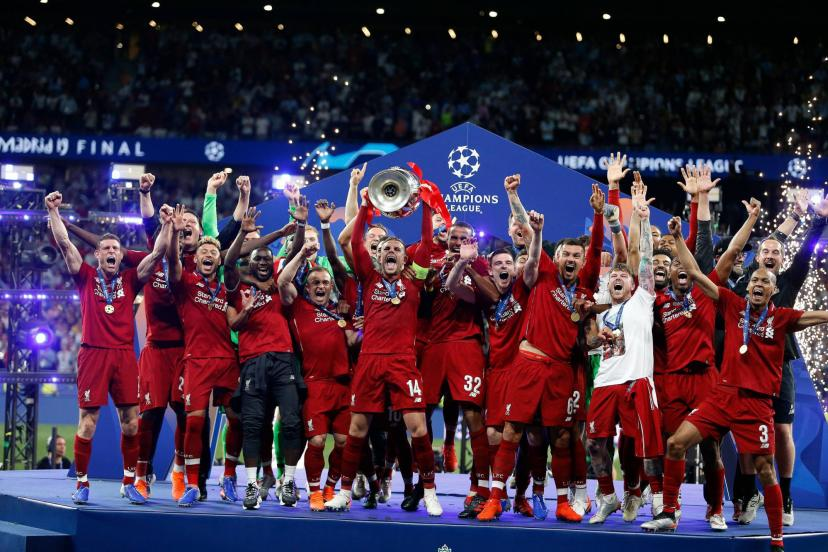

Liverpool Présentation:
- G: Alisson
- DC: Virgil van dijk
- DC: Matip
- DG: Robertson
- DD: Trent alexander arnold
- MDC: Fabinho
- MOC:Szoboszlai
- AG:Diaz
- AD:Salah
- BU:Jota
Remplaçant:
- G:Kelleher
- DC:Konaté
- DC:Gomez
- DG:Tsimìkas
- DD:Ramsay
- MC:Endo
- MOC:Elliot
- AG:Gakpo
- AD:Gordon
- BU:Firimino

Entraîneur
- Klopp
voici l'image du logo du club
Accédez à la page sur sliverpool
official

voir l'histoire